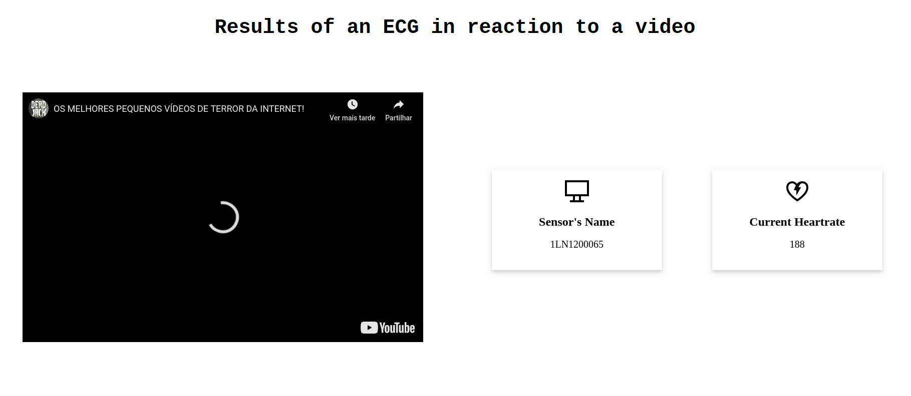

SmartFarm is the tool that helps you
remotely manage all your tillable areas.
The platform was developed to centralize all your farms's data,
obtained through the use of sensors scattered around them,
and to help you take actions on the fly.
Make it your own

Inside or Outside
Whether in an outdoor farm or in a greenhouse,
SmartFarm will help be there to help you.
As long as there is an internet connection, we can install our sensors to send all kinds of metrics to the platform!
Let it grow
Expand your land of control easily by integrating new sensors. The integration is automatic!

Next generation farming
Need to water the farm when the temperature rises?
Say no more! SmartFarm allows you to define alerts associated with the actuators you have installed on the farm.

You control it
Is anyone wondering around your farm? Our movement sensors can detect any movement and send an image to the platform, along with an alert. No need for worries!
Keep an eye on your lands at any time!
-

Add your Farms
-

Farms' sensors list
-

Sensors reporting live and historical data
-
See the triggered alerts
Check live or historical sensors metrics
Check the environmental conditions and other metrics in real-time on the platform.
All the data you need to make immediate decisions.
Sensors metrics analytics
Get more of your sensors data!
The platform is always processing the data and calculating the average value for all the sensors.
Alerts & Actuators
Set alerts to thresholded values of data collected by the sensors and schedule actions based on those events.
Unlimited possibilities with an easily extensible platform.
Meet the farmers who developed the platform

Daniela Simões
danielasimoes@ua.pt
76771

Diogo Filipe Ferreira
pdiogoferreira@ua.pt
76425

Diogo Daniel Ferreira
diogodanielsoaresferreira@ua.pt
76504

Luís Leira
luisleira@ua.pt
76514

Pedro Martins
pbmartins@ua.pt
76551
The Plan
M1
March 19
Sensors' data flowing through broker.
Basic UI working and display values from a sensor at real-time.
M2
April 14
Data coming from sensors should be saved on a database.
UI should correctly display values coming from sensors and the historic data.
M3
April 28
UI should allow device management,
it should be possible to send actions to the actuators
and an historic view of data should be presented.
Data processing (averages).
Reverse proxy and load balancing.
M4
May 12
Basic users management (AAA) should be done.
Alarming module should be finished and
all features should be implemented.
Basic acceptance testing and system logging.
M5
May 26
Final touches on the UI.
Final debugging on the platform and
non-functional and integration testing.
Continous Integration/Deployment done.
M6
June 4
Final presentation.
M7
June 10
Final delivery.